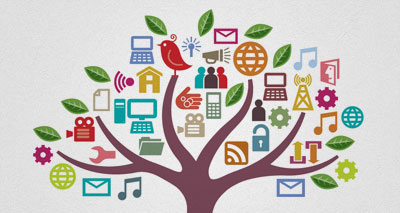

Technology is the study of scientific knowledge in order to create tools and processes that may be
used to change the world by increasing efficiency in nearly every aspect of our lives. Technology
has impacted our lives positively and allowed ideas and resources to be shared more easily, the
overuse of some technology has been linked to a decline in mental health, increased social division,
and privacy concerns.
Technology has impacted our lives positively and allowed ideas and resources to be shared more
easily,
the overuse of some technology has been linked to a decline in mental health, increased social
division,
and privacy concerns.
Positive Ways Technology Impacts Our Lives:
- Improved Communication
- AI Changing The Way We Work
- Better Information Access
- Virtual Social Lives
Improved Communication
Technology has impacted our lives positively and allowed ideas and resources to be shared more
easily,
the overuse of some technology has been linked to a decline in mental health, increased social
division,
and privacy concerns.

AI Changing The Way We Work
AI algorithms have the potential to revolutionize decision-making processes by analyzing vast amounts
of
data, identifying patterns, and providing valuable insights.The AI revolution really is here.
ChatGPT
has been helping people with jobs like writing recipes, creating job resumes, crafting essays and
poems,
summarizing historical events, composing emails, creating spreadsheets, and even filing their tax
returns.
Better Information Access
With just a few clicks, you can get access to loads of information. Because of this, we have more
freedom
and we can deliver our work from almost any part of the world. Technology makes sharing files,
studying,
and more much easier.The internet and digital tools allows to explore various subjects, conduct
research, and access educational materials that may not be available in traditional textbooks.
Virtual Social Lives
Another seismic change in our lives over the past decade has been the widespread usage of social
media.
Services such as Twitter, Snapchat, TikTok, Instagram, and others give us an insight into the waking
lives of others in real-time, whether they're friends with a few followers or celebrities with
millions.
Negative Ways Technology Impacts Our Lives:
- Isolation
- Depression and anxiety
- Physical health effects
- Anti-Socialization
Isolation
Technologies, such as social media, are designed to bring people together, yet they may have the
opposite effect in some cases.
A 2017study in young adults aged 19–32 years found that people with higher social media use were
more than three times as likely to feel socially isolated than those who did not use social media as
often.
Finding ways to reduce social media use, such as setting time limits for social apps, may help
reduce feelings of isolation in some people.
Depression and anxiety
The authors of a 2016 systematic reviewTrusted Source discussed the link between social networks and
mental health issues, such as depression and anxiety.
Their research found mixed results. People who had more positive interactions and social support on
these platforms appeared to have lower levels of depression and anxiety.
However, the reverse was also true. People who perceived that they had more negative social
interactions online and who were more prone to social comparison experienced higher levels of
depression and anxiety.
So, while there does appear to be a link between social media and mental health, a significant
determining factor is the types of interactions people feel they are having on these platforms.
Physical health effects
With just a few clicks, you can get access to loads of information. Because of this, we have more
freedom
and we can deliver our work from almost any part of the world. Technology makes sharing files,
studying,
and more much easier.The internet and digital tools allows to explore various subjects, conduct
research, and access educational materials that may not be available in traditional textbooks.
Virtual Social Lives
Another seismic change in our lives over the past decade has been the widespread usage of social
media.
Services such as Twitter, Snapchat, TikTok, Instagram, and others give us an insight into the waking
lives of others in real-time, whether they're friends with a few followers or celebrities with
millions.